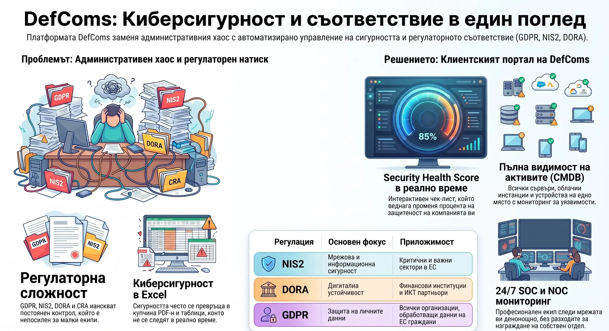

Governance & Compliance
Специалист по защита на данните на аутсорс (DPO)
Поемаме ролята DPO за фирмата — надзираме съответствието с GDPR, поддържаме политиките и регистрите и служим за контакт при проверки и искания.

Независим поглед върху данните
Какво включва DPO на аутсорс
Осигуряваме независим надзор върху обработването на лични данни и помощ при диалог с администрацията. Услугата се допълва с нашите GDPR ресурси и оценката на цифровия отпечатък.
- Надзор върху съответствиетоПроверка дали обработването на данни отговаря на GDPR и вътрешните правила.
- Регистри и документацияПоддръжка на регистъра на дейностите по обработване и съответните политики.
- Обучение на екипаИнформиране на служителите за задълженията им при работа с лични данни.
- Контакт при проверкиСъдействие при искания от администрацията и при оценки на въздействието.
Често задавани въпроси
DPO на аутсорс
Задължително ли е фирмата да има DPO?
Зависи от дейността и мащаба на обработване на данни; преценката дали ролята е задължителна се прави конкретно за вашия случай.
Може ли DPO да е външно лице?
Да — GDPR изрично допуска ролята да се изпълнява по договор за услуга, каквато е нашата DPO на аутсорс.
Обхват и оферта
Как се формира DPO офертата
Обхватът и форматът на ангажимента се договарят писмено след преглед на видовете данни, които обработвате, и на текущото състояние на документацията.
За индивидуална оценка — заявете консултация.